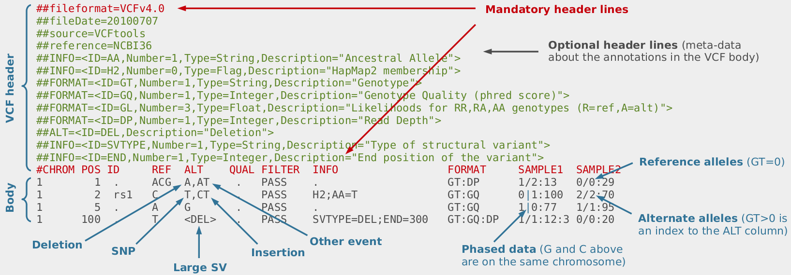
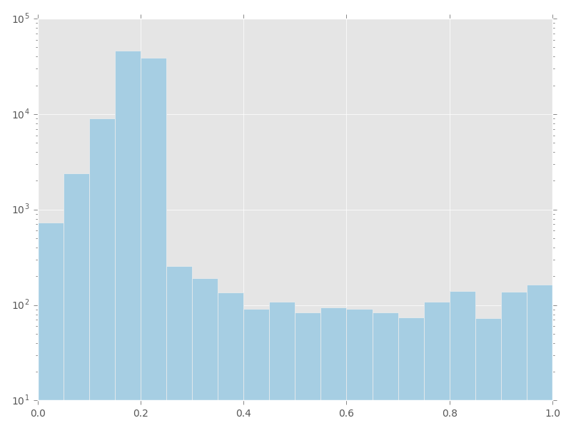
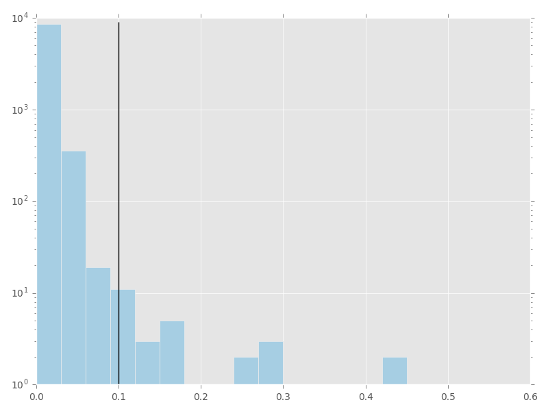
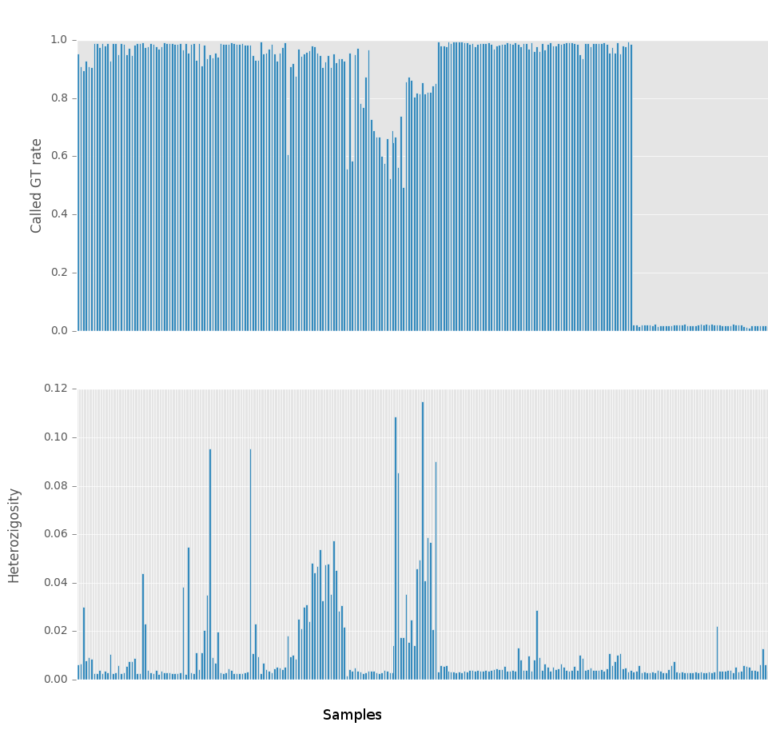
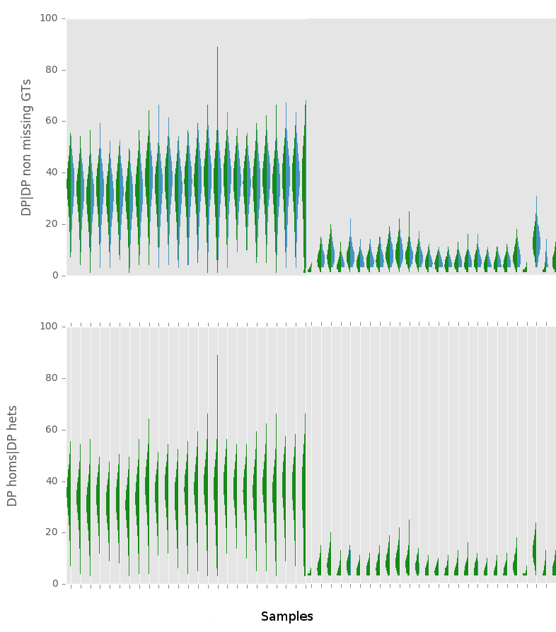
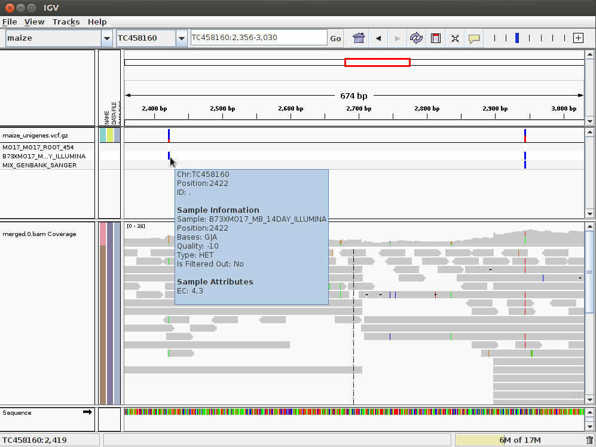

SNP calling¶
{kind=link}
One of the main applications of the NGS technologies is the SNP mining in the resequencing projects. Reads from different individuals are generated and Single Nucleotide Polymorphisms (SNPs) and indels are looked for by comparing them with the reference genome.
Once an alignment is generated as a BAM file looking for SNPs is not a conceptually a difficult task. We go through every column of the alignment and in every one we see how many alleles are found and how they compare with the one found in the reference genome. Unfortunately this naive view is complicated by several confounding factors:
The cloning process artifacts (e.g. PCR induced mutations).
The error rate associated with the sequence reads.
The error rate associated with the mapping.
The reliability of the reference genome.
In fact Heng Li, the author of BWA, has recently evaluated the error rate of the SNP calling proccess and has concluded that the two major sources of errors are:
erroneous realignment in low-complexity regions
incomplete reference genome with respect to the sample
He concludes that with the methods available at April of 2014 “the raw genotype calls is as high as 1 in 10-15 kb, but the error rate of post-filtered calls is reduced in 1 in 100-200kb without significant compromise on the sensitivity”.
Alignment considerations¶
The mapping tools calculate a probability for the correctness of the alignment for the whole read. This probability depends on the length of alignment, on the number of mismatches and gaps and on the uniqueness of the aligned region on the genome and it should reflect the probability of the read being originate from the aligned region on the reference. It is important to distinguish the real SNPs from the mismatches between repeated homologous genomic regions.
Even in the case in which the read maps only to one location in the reference genome and we have a good alignment score for the overall read some bases of the read can be misaligned.
coor 12345678901234 5678901234567890123456
ref aggttttataaaac----aattaagtctacagagcaacta
sample aggttttataaaacAAATaattaagtctacagagcaacta
read1 aggttttataaaac****aaAtaa
read2 ggttttataaaac****aaAtaaTt
read3 ttataaaacAAATaattaagtctaca
read4 CaaaT****aattaagtctacagagcaac
read5 aaT****aattaagtctacagagcaact
read6 T****aattaagtctacagagcaacta
One approach to this problem is to realign the problematic regions to solve the problem, this is the approach taken by GATK realignment. The actual implementations of this realignment are computationally quite intensive and the results are not perfect. The samtools developers have proposed an alternative solution, instead of solving the problem, to detect it and mark it with alignment qualities per base and not only per read. The resulting qualities calculated by the samtools are known as BAQ (Base Alignment Quality) and the method to calculate them is described in the mpileup manual.
Quality recalibration¶
Every base of the reads is generated with a Phred score associated. This score should be related with the probability of a sequencing error on the nucleotide read. In this way we could distinguish sequencing errors from real variation, but there is a catch, the Phred values have an intrinsic error in themselves. When the Phread values are compared with the real sequencing error rates, calculated by resequencing well established standards, they are usually found to be in disagreement. It is often the case that the sequencing error rates predicted by the sequencing machines are not completely accurate. To solve this issue a recalibration of the quality scores can be carried out.
To do a recalibration the variable positions found in the alignments are classified according to the information of which SNPs have been previously detected in the species. The variable positions that do not match a previously known SNP are expected to be mainly sequencing errors and with that information the read quality can be recalibrated. This process is implemented by GATK and SOAPsnp.
In the case of a species with much previous SNP information the recalibration could be carried out by doing a first round of SNP calling and then recalibrating using the called SNPs as the true SNP of the species. In this case after the recalibration is done the second, and definitive, SNP calling would be performed.
SNP calling¶
Once we have taken into account the sequencing and alignment problems we can use a SNP calling software to look for the SNPs. The most commonly used SNP callers are: samtools’ mpileup, GATK and FreeBayes. Each one of these SNP callers make different assumptions about the reference genome and the reads, so each one of them is best suited for different situations.
Some SNP callers are based on counting the number of reads for each alleles once appropriate thresholds for the sequencing and mapping qualities have been applied. This simple method is the one used by the VarScan SNP caller as well as by most of the commercial SNP callers. But other methods based on more advanced statistics have also been developed. This methods often perform better, specially with low coverages, and do certain assumptions to create bayesian models. Most of them assume diploid individuals and some even take into account the Hardy-Weinberg equilibrium and Linkage Disequilibrium information as well as previous information about the SNPs present in the species and their allele frequencies.
The GATK project has published a good resource to lear more about SNP calling best practices.
Brad Chapman has a very interesting piece comparing the use of several aligners and SNP callers. For the read alignment he used bwa-mem. Then he compared two alternative post-processing methods:
de-duplication with Picard MarkDuplicates, GATK base quality score recalibration and GATK realignment around indels.
Minimal post-processing, with de-duplication using samtools rmdup and no realignment or recalibration.
- For the SNP and indel calling with compared three methods:
FreeBayes (v0.9.9.2-18): A haplotype-based Bayesian caller from the Marth Lab.
GATK UnifiedGenotyper (2.7-2): GATK’s widely used Bayesian caller.
GATK HaplotypeCaller (2.7-2): GATK’s more recently developed haplotype caller which provides local assembly around variant regions
Some of his main conclusions were:
skipping base recalibration and indel realignment had almost no impact on the quality of resulting variant calls
FreeBayes outperforms the GATK callers on both SNP and indel calling. The most recent versions of FreeBayes have improved sensitivity and specificity which puts them on par with GATK HaplotypeCaller.
GATK HaplotypeCaller is all around better than the UnifiedGenotyper.
He has also compared the performance of the Structural variant callers and the cancer SNP callers.
VCF format¶
The end result of a SNP calling analysis is a collection of SNPs. An standard file has been created to hold these SNPs, the Variant Call Format file (VCF). In this file every line represents an SNP and the following information is found:

The position in the reference genome.
The allele in the reference genome.
The other alleles found.
The filters not passed by the SNP.
The genotypes found with its abundances.
{kind=link}
A tool for working with these files has been created, VCFtools. In its web site a definition of the file format can be found. VCFtools allow:
Format validation.
SNV annotation.
VCF comparison.
Statistics calculation.
Merging, intersections and complements.
We can take a look at a VCF file quite easily with a text editor, although we might also find some of them convected to a binary format (BCF). Also, the fields in this file are delimited by tabs, so it can be imported into a spreadsheet program by using the csv option.
The types of variants that can be stored in a VCF file are:
SNPs
Alignment VCF representation
ACGT POS REF ALT
AtGT 2 C T
Insertions
Alignment VCF representation
AC-GT POS REF ALT
ACtGT 2 C CT
Deletions
Alignment VCF representation
ACGT POS REF ALT
A--T 1 ACG A
Complex events
Alignment VCF representation
ACGT POS REF ALT
A-tT 1 ACG AT
Large structural variants
VCF representation
POS REF ALT INFO
100 T <DEL> SVTYPE=DEL;END=300
SNP quality assesment¶
Several distributions can be created to analyze the SNP calling result:
% of missing calls per SNP
SNP depth or Genotype depth
SNP observed heterozygosity
SNP quality
SNP density
Sample depth
% of missing calls per sample
Sample observed heterozygosity
Number of SNPs called at different missing rates:
{kind=link}
Number of SNPs with different observed heterozygosities:
{kind=link}
Observed heterozygosity and called GT rate per sample.
{kind=link}
Depth distributions per sample for all genotype calls and for the non-missing genotype calls:
{kind=link}
SNP filtering¶
Filtering the SNPs after the SNP calling is a critical task. We can filter the SNPs for different reasons like usefulness or risk of being a false positive. In the called SNPs there will be some false positives so we could want to remove those false positives. It is common to divide the SNPs in several tiers according to our confidence in them.
Several application exist to filter SNPs VCFtools, SnpSift, Vardict and GATK are just some examples.
Some of the parameters than can be taken into account are: quality, heterozygosity, depth, mapping quality, errors of the reads, or allele frequency.
We could also select some SNPs for a genotyping platform or to do a particular analysis.
A VCF file is a matrix with the SNPs in rows, the samples (e.g. individuals) in the columns and the genotypes in the cells. We can filter SNPs (lines/rows), samples (columns) or genotypes (setting the corresponding genotype to not determined). In the case of the SNP filtering the nomenclature can be confusing, because two different kind of analyses are commonly refered as filtering. We can remove the lines corresponding to the filtered SNPs from the file altogether or we can annotate the SNP/row adding a tag to the filter column in the VCF file, but without removing the SNP from the file.
The freebayes SNP caller includes some programs to filter the SNPs, among them vcffilter that makes possible to remove SNPs/rows or genotypes from the VCF file by using different criteria.
Filter for SNPs¶
Low quality¶
SNP callers usually assign a quality (probability) to the SNPs. We can filter out the SNPs with lower qualities.
Missing data¶
We could filter the SNPs with large amount of missing genotypes. This could happen, for example, in RNASeq experiments (in genes with low expression in some samples), in GBS experiments or in low coverge genome sequencings.
Number of alleles¶
It is possible to remove the monomorphic SNPs or to filter out the SNPs that are not biallelic.
Kind¶
We can filter the SNVs according to its type: SNV, indel, complex or structural variation
Position¶
We can filters the SNPs according to its location in the genome. For instance, we could keep only the SNPs found in an exon or in a coding region.
It is also common to thin out the SNPs, to select one SNP every some kilobases in the genome.
Low Complexity Region¶
It has been shown that due to problems with the PCR and the alignment the low complexity regions are particularly prone to false positive SNPs. We could remove them with a low complexity filter. These are also the regions that tend to be more variable in the populations, so by removing those SNPs we will create lots of false negatives. This filter will tend to decrease the amount of information, but hopefully will also remove quite a lot of noise.
Flag and info¶
We could filter the SNPs according to the flag and info fields found in the VCF files. It is usual that a tools that runs a filter in a VCF file just puts a tag in the VCF flag field.
Minor Allele Frequency (MAF)¶
MAF can sometimes refer to the Minor Allele Frequency and sometimes to the Major Allele Frequency. Both statistics convey the same information for the biallelic SNPs, but the Major Allele Frequency is more straightforward if we have more than 2 alleles.
SNPs due to sequencing errors will usually have major allele frequencies close to 1, because few genotypes will have an allele due to the error. So we could remove most SNPs due to sequencing errors by using this filter. If we do it, we will also filter out lots of real SNPs that are almost fixed in the population.
If we are dealing with a segregant population we usually expect a range of MAF values and we can use this information to decide which SNPs should be filtered out.
If we have pooled samples we might consider applying this filter to individual samples.
Another very related measure is MAC: major/minor allele count.
Observed Heterozygosity¶
One common source of false positive SNPs with high heterozygosity rates is due to duplicated regions found in the problem sample that are not found in the reference genome. It is common to have SNPs in these regions with heterozygosities close to 0.5. In such cases the SNPs will be due to reads from the two copies that are piled in the only copy found in the reference genome. This cases can not be avoided by filtering the reads with MAPQ because since only one copy of the duplication is found in the reference genome the mapper software can not guess that there is a problem due to a repetitive element. Another way to spot these false positives is to look for SNPs with a high coverage.
High Coverage¶
An excessive coverage can point to false positives due to duplicated regions in the sequenced sample not found in the reference genome. See also the observed heterozygosity filter.
Highly Variable Region¶
Having regions with too many SNPs could also be a sign that we are piling up reads from repeated regions. We could filter out the SNPs located in such highly variable regions. This analysis is usually done counting the number of SNPs in a window around each SNP.
It can also be useful to remove the SNPs with an SNP too close if we want to design primers to do a PCR or genotyping experiment. In this case we might also want to remove the SNPs that are close to the start or the end of the reference sequence. This could be particularly relevant if we are using a transcriptome as a reference.
Linkage Disequilibrium¶
If we have genotype a segregant population it could be useful to filter out the SNPs that are not in linkage disequilibrium with their closest SNPs. Many of these unlinked SNPs will be false positives.
Variability¶
We might be interested in filtering out or selecting SNPs that are variable in a set of samples or that differenciate two sets of samples.
Aminoacid change¶
We can select the SNPs with large impacts in the coded proteins. The SnpEff tool can be used for that.
Cap enzyme¶
We can select the SNPs that create restriction sites if we want to detect them by PCR and restriction enzyme digestion.
HWE¶
We can also filter out the SNPs that are not in HWE or that show a non-medelian segregation in a segregant population.
Filters for Genotypes¶
It is also possible to filter out not SNPs, but genotypes. In this case the genotype is usually set to not determined.
To genotype a sample with good quality we need more information than to just get the SNP with good quality. If we have several samples, all their reads will contribute information to determine the SNP, but to get the genotype of any of them we need enough coverage in the given sample.
Two common filters used for genotypes are the depth of coverage for the genotypes and the genotype quality that is created by most SNP callers.
Filters for Samples¶
We might also be interested in filtering out some individuals. Some common criteria are: amount of missing genotype calls and observed heterozygosity.
GFF format¶
The GFF files are used to store annotations. An annotation can be thought as a label applied to a region of a molecule. For instance we could tag a region covered by a gene in a chromosome. The GFF files are text files and every line represents a region on the annotated sequence and these regions are called features. In the previous case the gene would be a feature of the chromosome. Features can be functional elements (e.g., genes), genetic polymorphisms (e.g. SNPs, INDELs, or structural variants), or any other annotations. Each feature should have a type associated. Examples of some possible types are: SNPs, introns, ORFs, UTRs, etc. The terms used to define these types should belong to the Sequence Ontology terms. If you are interested you can take a look at the Sequence Ontology or at the GFF format specification.
In the GFF format both the start and the end of the features are 1-based.
##gff-version 3
##sequence-region ctg123 1 1497228
ctg123 . gene 1000 9000 . + . ID=gene00001;Name=EDEN
ctg123 . TF_binding_site 1000 1012 . + . ID=tfbs00001;Parent=gene00001
ctg123 . mRNA 1050 9000 . + . ID=mRNA00001;Parent=gene00001;Name=EDEN.1
BED format¶
The BED format provides a simpler way of representing the features in a molecule. Each line represents a feature in a molecule and it has only three required fields: name, start and end.
chr22 1000 5000 cloneA 960 + 1000 5000 0 2 567,488, 0,3512
chr22 2000 6000
The BED format uses 0-based coordinates for the starts and 1-based for the ends. So the 1st base on chromosome 1 would be:
chr1 0 1 first_base
Headers are allowed. Those lines should be preceded by # and they will be ignored.
Practical tasks¶
SNP calling with mpileup¶
SNP calling with samtools’ mpileup.
Create a directory named snp_call and download the files.
ngs_user@ngsmachine:~$ cd
ngs_user@ngsmachine:~$ pwd
/home/ngs_user
ngs_user@ngsmachine:~$ mkdir snp_call
ngs_user@ngsmachine:~$ cd snp_call/
Download the reference and the BAM file in to this directory.
ngs_user@ngsmachine:~/snp_call$ ls
human_cambridge_reference_mito.fasta mito_yoruba_reads_pe1.sorted.bam
Use Samtools to index the bam file.
ngs_user@ngsmachine:~/snp_call$samtools index mito_yoruba_reads_pe1.sorted.bam
Use mpileup and bcftools to call the SNPs
ngs_user@ngsmachine:~/snp_call$ bcftools view
Usage: bcftools view [options] <in.bcf> [reg]
Options: -c SNP calling
-v output potential variant sites only (force -c)
-g call genotypes at variant sites (force -c)
-b output BCF instead of VCF
(...)
ngs_user@machine:~/snp_call$ samtools mpileup -ugf human_cambridge_reference_mito.fasta mito_yoruba_reads_pe1.sorted.bam | bcftools call -cv - > var.raw.vcf
[mpileup] 1 samples in 1 input files
<mpileup> Set max per-file depth to 8000
[afs] 0:15459.489 1:10.430 2:54.081
ngs_user@machine:~/snp_call$ bcftools view var.raw.vcf | vcfutils.pl varFilter -D100 > var_mito_yoruba_mpileup.flt.vcf
The resulting vcf file contains our SNPs. There are plenty of options to tweak the SNP calling process. To get an idea of the possibilities go to the mpileup page.
Looking at the SNPs using IGV¶
In the IGV we can load the BAM, GFF and the VCF files. In that way we can compare the mapping with the annotation. To do it, open IGV and load the BAM file from the mapping subdirectory. This time you won’t need to import the reference genome, it will be automatically selected, because it was the last reference used. Load the BAM file as you did the last time. Also load the compressed and indexed VCF file in annotation/features/ (you could sort and index the vcf file with an IGV tool). Now you should have two tracks in IGV, one with the mapping and another one with the SNP annotation. We could also load the GFF file with all the annotations, such us SSRs, ORFs, etc. In this case the GFF and VCF tracks would show similar annotation.
Sometimes IGV shows the GFF track collapsed by default, you can expand it by clicking on the right mouse button above the track and selecting expand.
{kind=link}
SNP calling with FreeBayes¶
Freebayes is a SNP calling program based on bayesian statistics. It is able to deal with individual and populations or pooled and polyploid samples. FreeBayes is versatil and ajustable, then is necesary to deal with their parameters and options.
ngs_user@ngsmachine:~/snp_call$ freebayes -h
Use FreeBayes to identify SNPs in the previous files.:
ngs_user@ngsmachine:~/snp_call$ freebayes -f human_cambridge_reference_mito.fasta -b mito_yoruba_reads_pe1.sorted.bam -v ./var_mito_yoruba_freebayes.vcf
We have used the FreeBayes with the default configuration and our sample is haploid, run again with this parameter modified.
ngs_user@ngsmachine:~/snp_call$ freebayes -f human_cambridge_reference_mito.fasta -b mito_yoruba_reads_pe1.sorted.bam -p 1 -v ./var_mito_yoruba_freebayes_haplo.vcf
It is posible improve the result with quality paramenters such as:
- -m –min-mapping-quality Q
Exclude alignments from analysis if they have a mapping quality less than Q. default: 30
- -q –min-base-quality Q
Exclude alleles from analysis if their supporting base quality is less than Q. default: 20
- -C –min-alternate-count N
Require at least this count of observations supporting an alternate allele within a single individual in order to evaluate the position. default: 1
Run now limiting to alternate alleles detected in three or more reads.:
ngs_user@ngsmachine:~/snp_call$ freebayes -f human_cambridge_reference_mito.fasta -b mito_yoruba_reads_pe1.sorted.bam -p 1 -C 3 -v ./var_mito_yoruba_freebayes_haplo_reads3.vcf
SNP calling with VarScan¶
The VarsScan is a SNP calling than works with more simple statistics that may be more robust in extreme read depth, pooled samples, and contaminated or impure samples. VarScan employs statistics based on thresholds for read depth, base quality, variant allele frequency, etc.
First is necessary to change the alignement file from BAM to mpileuo format using samtools.
ngs_user@ngsmachine:~/snp_call$ samtools mpileup -f human_cambridge_reference_mito.fasta mito_yoruba_reads_pe1.sorted.bam >mito_yoruba_reads_pe1.mpileup
There are several programs in Varscan.
ngs_user@ngsmachine:~/snp_call$ varscan
mpileup snp is the comand to identify SNPs, but it do not call indels.
ngs_user@ngsmachine:~/snp_call$ varscan mpileup2snp -h
ngs_user@ngsmachine:~/snp_call$ varscan mpileup2snp mito_yoruba_reads_pe1.mpileup -output-vcf 1 >var_mito_yoruba_varscan.vcf
Using IGV, compare the mito_yoruba_haplo_reads3.vcf and mito_yoruba_snps.vcf files, why have not VarScan detected SNPs called by Freebayes?. We have used this option by default.
--strand-filter Ignore variants with >90% support on one strand [1]
Look for SNPs without this strand filter.
varscan mpileup2snp mito_yoruba_reads_pe1.mpileup --strand-filter 0 -output-vcf 1 >var_mito_yoruba_snps_varscan_not_filter_strand.vcf
What did happen with the mileup snps?. Detect the mistake on the command.
SNP calling using calmd¶
Use freebayes to identify snps in these Celegans alignments against this reference sequence. Take into account that this bam file has not been processed by samtools calmd. Search for snps with pre calmd processed alignment file and with the post processed file.
ngs_user@ngsmachine:~/snp_call$ samtools index alignments.bam
ngs_user@ngsmachine:~/snp_call$ freebayes -f ref.fasta --min-base-quality 20 alignments.bam |bgzip > alignments.vcf.gz
ngs_user@ngsmachine:~/snp_call$ tabix -p vcf alignments.vcf.gz
Now look for the snvs after procesing the alignment file with calmd
ngs_user@ngsmachine:~/snp_call$ samtools calmd -Arb alignments.bam ref.fasta > alignments.calmd.bam
ngs_user@ngsmachine:~/snp_call$ samtools index alignments.calmd.bam
ngs_user@ngsmachine:~/snp_call$ freebayes -f ref.fasta --min-base-quality 20 alignments.calmd.bam |bgzip > alignments.calmd.vcf.gz
ngs_user@ngsmachine:~/snp_call$ tabix -p vcf alignments.calmd.vcf.gz
Look for the differences using IGV. Take a look at the position 7950020.
If you load the bam files into IGV, can you see differences between them?
One more thing: Have you looked at the mapq of the secuences? You can draw an histogram and have a look into it:
ngs_user@ngsmachine:~/snp_call$ draw_mapq_hist alignments.calmd.bam -o alignments.calmd.mapq.png
Acording to the histogram, what minimum mapq would you use. Test some of them and look the results with igv.
SNP filtering¶
We have a VCF file from a RIL segregant population.
SNP quality can be filtered with vcffilter, a program included in the freebayes distribution.
Before using vcffilter the VCF file has to be indexed:
$ tabix -p vcf ril.vcf.gz
Now we can apply the quality filter using vcffilter:
$ vcffilter -f "QUAL > 10" ril.vcf.gz | bgzip > filtered.vcf.gz
We can use also vcftools to filter and to do some statistics.
Filter SNPs with quality minor than 10:
$ vcftools --gzvcf ril.vcf.gz --recode --recode-INFO-all --minQ 10 --stdout | gzip -c > ril_vcf_Q10only.vcf.gz
Filter SNPs with more than 20% of missing data:
$ vcftools --gzvcf ril.vcf.gz --recode --recode-INFO-all --max-missing 0.8 --stdout | gzip -c > ril_vcf_0.8_missing.vcf.gz
Select all SNPs in a determiante region:
$ vcftools --gzvcf ril.vcf.gz --recode --recode-INFO-all --chr CP4_pseudomolecule00 --from-bp 161000 --to-bp 245000 --stdout | gzip -c > ril_vcf_candidate-region.vcf.gz
Calculate the observed heterozygosity of all SNPs:
$ vcftools --gzvcf ril.vcf.gz --het --out ril
Calculate the SNP density:
$ vcftools --gzvcf ril.vcf.gz --SNPdensity 10000 --out ril